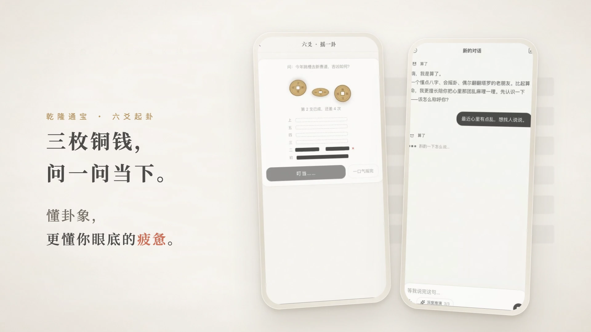

独立产品主理人 · 2026.09 – 2026.10
已上线 & 跑通商业打赏闭环
9 套多模型原型竞技 · 前置历法零幻觉引擎
《算了 · Suanle》—— 沉浸式 AI 互动决策与反内耗 Web 产品
“算一算，然后，算了。” 将东方历法推演、茶馆掌柜温润叙事与认知行为微行动融为一体的情绪释怀产品。
- 痛点洞察与反内耗产品定义：针对年轻人在高频日常选择中的“决策瘫痪”与情绪内耗，摒弃传统命理软件制造焦虑的套路；设计“对话梳理心境 → 写下执念揉成纸团丢入竹篓（配合静心铜钵声效）→ 生成宣纸箴言分享卡”的完整心理释怀链路。
- 多模型竞技选型与“确定性规则 + 大模型”零幻觉架构：平行调度多款主流大模型孵化 9 套不同交互风格的原型版本，通过对比实测优中选优收敛出最终生产版；针对大模型直接算命极易胡编干支历法的痛点，设计前置确定性天文历法排盘引擎 + 对话中按需唤起六爻/八字/紫微/塔罗等 6 类交互卡片 + 静默沉淀用户画像机制，从根源消除排盘幻觉。
-
单人全链路交付、主理人运营看台与宣发闭环：一人包揽需求定义、水墨宣纸生图、换机同步码设计、主理人实时运营看台（
/curator，实时监控系统负载、模型思考轨迹与对话质量）、容器化部署上线与 1080p 60fps 品牌宣传片制作。

1. 1080p 排盘起卦与掌柜解局